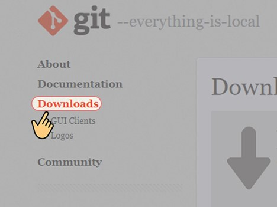

Cài đặt Git
Hướng dẫn cài đặt Git trên máy tính Window.
Bước 1: Vào trang web tải Git. Bạn lựa chọn mục Downloads

Bước 2: Sẽ có rất nhiều phiên bản phiên hợp với các hệ điều hành khác nhau để bạn lựa chọn. Bạn chọn phiên bản dành cho Windows.

Bước 3: Mở file Git bạn vừa mới tải xuống chọn Run.

Bước 4: Một cửa sổ cài đặt hiện ra bạn chọn Next

Bước 5: Lựa chọn vị trí lưu mà bạn mong muốn sau đó chọn Next.

Bước 6: Cửa sổ tiếp theo đã có những lựa chọn mặc định cho bạn, bạn có thể chọn thêm các mục khác theo nhu cầu bản thân. Hoặc cài đặt như bản mặc định của nhà phát triển. Bạn chọn Next để tiếp tục cài đặt.

Bước 7: Tiếp đến là lựa chọn đặt vị trí Git vào Start Menu trong mục Browse.
Bạn có thể chọn Don't create a Start Menu folder nếu không muốn tạo ra thư mục của Git trên Start Menu hoặc bạn cũng có thể để mặc định, sau đó chọn Next.

Bước 8: Tiếp đến chương trình sẽ yêu cầu bạn lựa chọn một chương trình soạn thảo để biên tập lệnh cho Git bash. Có rất nhiều chương trình khác nhau để bạn lựa chọn, nhưng nếu sử dụng Win 10, bạn nên để trình mặc định Vim mà phần mềm đã chọn sẵn, sau đó bạn chọn Next để tiếp tục cài đặt.

Bước 9: Tiếp theo, phần cài đặt Git yêu cầu bạn lựa chọn cài đặt về biến môi trường. Khi cài trên Windows 10 bạn nên sử dụng lựa chọn mặc định Git from the command line and also from 3rd-party software (Git từ dòng lệnh và cả từ phần mềm của bên thứ ba). Sau đó chọn Next.
- Nếu không cần diênng biến Path để là môi trường mặc định cho Git thì bạn có thể lựa chọn Use Git from Git Bash only (chỉ sử dụng Git từ Git Bash)
- Hoặc chọn Use Git and optional Unix tools from the Command Prompt nếu muốn sử dụng Git và các công cụ Unix tiêny chọn từ Command Prompt.

Bước 10: Tiếp theo là lựa chọn phương thức bảo mật. Bạn có thể lựa chọn phương thức mình mong muốn nhưng tốt nhất là nên giữ lại lựa chọn mặc định là Use the OpenSSL library (sử dụng thư viện OpenSSL) của phần mềm. Chọn Next để tiến hành bước tiếp theo.
Bạn có thể chọn Use the native Window Secure Channel library để sử dụng thư viện gốc Window Secure Channel làm phương thức bảo mật.

Bước 11: Cửa số tiếp theo yêu cầu chúng ta lựa chọn chương trình hiển thị cửa sổ dòng lệnh, để tương tác với chúng ta về sau. Bạn có thể lựa chọn Use Windows' default console window (sử dụng cửa sổ bảng điều khiển mặc định của Windows)để chọn màn hình đen chữ trắng mặc định của Windows.
Tuy nhiên để có giao diện tiếng Việt đẹp mắt và dễ dàng sử dụng, thao tác chúng ta nên giữ nguyên mục Use MinTTY the default terminal of MSYS2 (sử dụng MinTTY thiết bị mặc định của MSYS2). Sau đó chọn Next.
.")
Bước 12: Tiếp đến bạn sẽ lựa chọn hành vi mặc định của git. Bạn để nguyên lựa chọn mặc định là Default (fast- forward or merge) là chế độ mặc định của phần mềm. Chọn Next.
Bạn cũng có thể lựa chọn các mục khác như:
- Rebase
- Only ever fast- forward chỉ sử dụng fast- forward

Bước 13: Chọn mục trợ giúp chứng chỉ, để nguyên lựa chọn mặc định là Git credential Manager (Trình quản lý thông tin xác thực Git). Sau đó chọn Next.
Bạn cũng có thể lựa chọn các mục khác như:
- None: Không cần
- Git credential Manager Core: Trình quản lý thông tin xác thực Git Core

Bước 14 : Tiếp đến bạn sẽ lựa lựa chọn cấu hình tiêny chọn bổ sung, bạn để mặc định là Enble file system caching. Chọn Next.
- Enble file system caching (tạo bộ nhớ đệm hệ thống tệp)
- Enable symbolic links (bật liên kết tượng trưng)

Bước 15: Cuối ciênng bạn lựa chọn Install để kết thúc quá trình cài đặt. Bạn có thể chọn Enable experimental support for pseudo consoles (bật hỗ trợ thử nghiệm cho bảng điều khiển giả)

Bây giờ việc của bạn chỉ là chờ đợi chương trình cài đặt vào máy nữa là xong .

Bước 16: Cuối ciênng bạn sẽ có 2 mục để bạn lựa chọn:
- Mục Lauch Git Bash: để mở cửa sổ dòng lệnh của Git lên ngay sau đó.
- Mục View Release Notes: để xem ghi chú về các thay đổi của phiên bản này so với các phiên bản trước đó.
Các bạn có thể lựa chọn tùy theo nhu cầu của bản thân. Và chọn Finish để hoàn tất cài đặt.